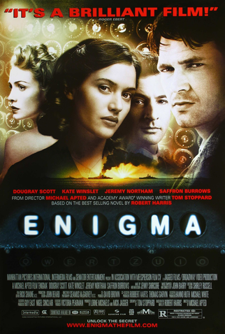

Matrix (1999)
Poderia um sistema de inteligência artificial dominar ser tão desenvolvido ao ponto de dominar todos os humanos? Parece algo utópico, mas esse é o cenário em que a aclamada obra Matrix se passa.
Assistir
Jogo da Imitação (2014)
O Jogo da Imitação retrata o desafio que o matemático Alan Turing, vivido por Benedict Cumberbatch, teve durante a Segunda Guerra Mundial: decodificar o Enigma, criptografia utilizada pelo exército nazista para se comunicar e planejar ataques.
Assistir

Enigma (2011)
Tom Jericho é um matemático e, ao desvendar o código usado pelos nazistas, vê que sua namorada desapareceu. Os nazistas alteram o código e, enquanto procura por Claire, Tom se dá conta de que cada nova pista é um enigma para decifrar o novo código.
Assistir